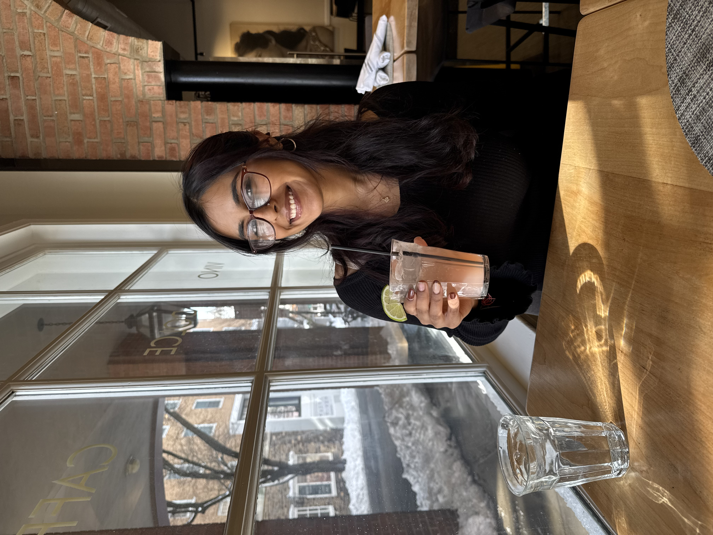
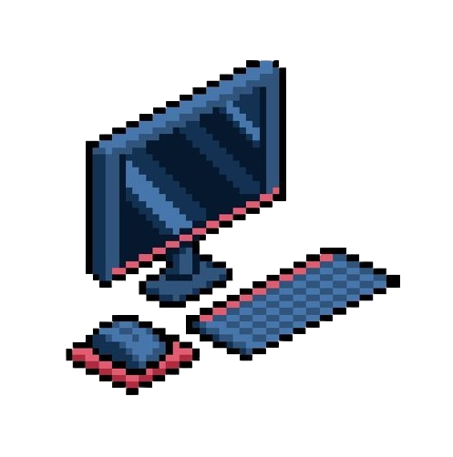
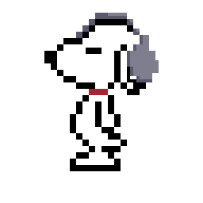

Welcome to the FRONTAL LOBE! The frontal lobe is the forwardmost part of the brain, and governs higher-order thinking, decision-making, and personality. Take a step in and welcome to the chaos behind the eyes and mind of Shilpi Shah.

THE BASICS!
Hi! I am currently a M.S. in Neural Technologies - Research at the Carnegie Mellon University Neuroscience Institute, pursuing my thesis in active perception and world models supervised by Dr. Tai Sing Lee. I am also currently working as an embodied AI evaluation + world model simulations researcher at a startup in Stealth in NYC. Previously, I've also been an autonomous vehicles and quantum algorithms researcher as an NSF Research Experience for Undergraduates (REU) fellow for two summers, and researched natural language decoding for a year at the Princeton Neuroscience Institute. You can read more about my previous work and experiences here. I recently graduated with my B.S. in Computer Science and B.A. in Cognitive Science (Honors) with a minor in Mathematics and certificate in Women's Leadership.
RESEARCH INTERESTS

My research interests lie in the intersection of cognitive science and artificial intelligence, particularly in understanding how biological systems process information and how these principles can be applied to world models and robotics. I aim to investigate the computational principles that enable biological and artificial systems to build, maintain, and reason over internal models of the world. I am particularly interested in the role of active perception, attention, and memory in shaping these internal representations to give rise to robust generalization in complex environments. By combining insights from cognitive/computational neuroscience, autonomous vehicles, probabilistic and quantum systems, and modern machine learning, I hope to develop computational models that both advance embodied AI and deepen our understanding of intelligence and cognition itself. More specifically, I hope to answer the question: How do biological and artificial systems construct, maintain, and update internal representations of the world?
PERSONAL

Contrary to popular belief, I do, in fact, have hobbies beyond research! I love music (with 100+ personally curated playlists) and can play seven instruments, including the flute, violin, piano, guitar, saxophone, percussion, and clarinet. When I was in high school, I actually had a goal of getting a loop pedal and performing a one-person band act, but it sadly never happened. This is still one of my life goals, so fingers crossed I'm able to do it soon! I also love to travel and have been to 20 countries and counting! My favorites so far have been Switzerland and Belgium (though that may just be because I love chocolate), but I also absolutely loved Florence, Italy and plan to go back on my own soon! My name means artist and I've worked very hard in making sure to incorporate this into my identity whenever I can. Ever since I was young, I've loved to draw, paint, read, graphic design, and all around, just create. I'm in the process of learning how to do pottery! Creativity is in everything we do; invention is art. To me, there is no vast difference between art and science, and I love to explore the intersection of the two. And if you can't tell, I absolutely love video games. My entire childhood was pretty much shaped by Mario, which is my primary inspiration for this site. I hope you enjoy playing through!